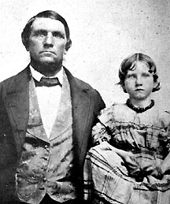

|

NAME: Charles Stevens
BORN: 1824
DIED: 1865
ALLEGIANCE: Confederate
HIGHEST RANK: Private
UNIT: 29th Georgia Cavalry, Company I
RECORD: 1864 - enlisted as a private in the summer.
1865 - died February 1, a prisoner of war at Fort Delaware.
|
|
In 1835, 18-year-old Charles Stevens emigrated from his
native Denmark to the United States. By age 40 he had a wife
and seven children and owned a lucrative shipping business
and a small plantation in Georgia. He reluctantly risked
everything in 1864 to fight against his adopted country for
a cause he did not support. He died a prisoner of war half a
year later.
Five years after arriving in New Orleans in February
1835, Charles Stevens lived in Savannah, Georgia, and owned
a business shipping crops to Southern ports. In 1862, a year
after the Civil War started, the business foundered when a
Union coastal blockade halted all shipping traffic in the
state.
By 1863 Stevens, 47 years old, was a member of the local
militia unit, a group of men too young or old to serve in
the regular Confederate army. As the war persisted and Rebel
ranks diminished, the army relaxed its age requirements.
Stevens and many other local militiamen fit within the new
acceptable age range of 17 to 50, and the army integrated
them into Company I of the 29th Georgia Cavalry in mid-1864.
Parts of the unit traveled to northern coastal Georgia
later that year to guard against a threatened Union invasion
of the state. Though soldiers from the 29th never faced an
attack from the North, in December some of them skirmished
near Savannah with Union soldiers who had just marched from
Atlanta in Major General William Tecumseh Sherman's March to
the Sea.
On December 22, a day after the coastal city fell to the
Union, Stevens and seven other Rebels were captured by Union
sailors. They were sent north to Fort Delaware, a
prisoner-of-war camp with horrendous living conditions
rivaling those of the South's notorious Andersonville. On
February 1, 1865, Stevens died at age 49 in the prison
hospital.
Source: Civil War Times Illustrated
32:3 (July/August 1993), 74.
|